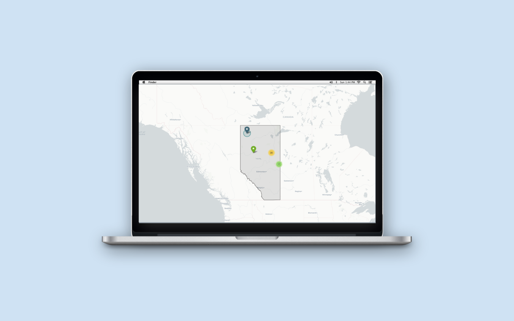

alberta well locator
August 2022 / Full Stack Developer
Technologies: Flask, Folium, Python (Pandas, NumPy), SQLite
Company: BitCan Geosciences and Engineering

The Problem
Geoscientists at this firm required a tool that effectively demonstrates
the relative distance between well sites, while also providing comprehensive land property
information, in order to improve the efficiency of the well selection process.
My Solution
The Alberta Well Locator Program is a data visualisation tool that allows the user to interact with BitCan’s directory of well sites. Given any input Unique Well Identifier (UWI), the web app maps the point of interest, calculates the distance between the input UWI and all existing well sites, and displays rock lithology, in-situ, and mechanical properties associated with each well.
☑️ Distance Data
The most challenging aspect of this project was creating the distance calculation feature from scratch.
The Alberta Dominion Land Survey System is a grid network dividing the province into equal-sized parcels of land.
However, each section varies slightly in size due to convergence of grid lines near the poles and divergence near the equator.
I created a mapping from known ATS locations to coordinates of latitude and longitude, then imputed missing values using the
k-nearest-neighbours method to create a
comprehensive dataset.
This tool performs distance calculations with 99% accuracy using the Haversine great-circle formula.
Other Features
Visualize various land properties
Mantain database easily from the front-end